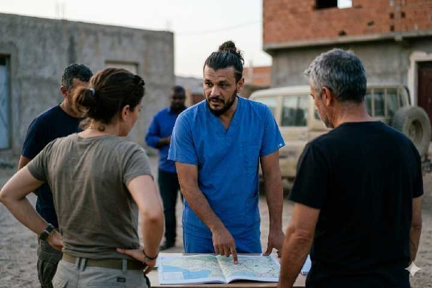
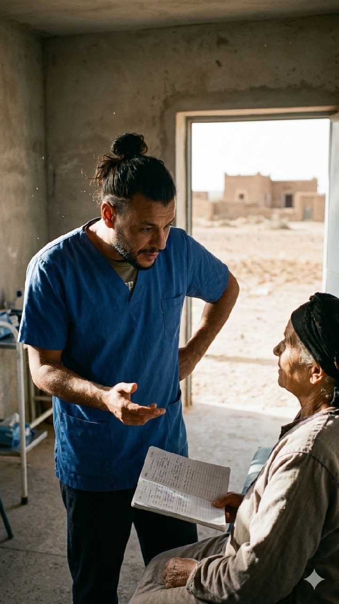
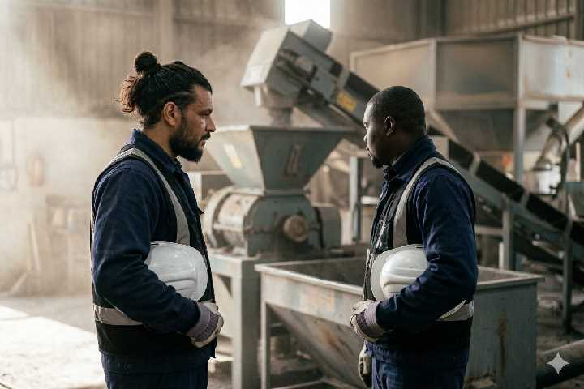
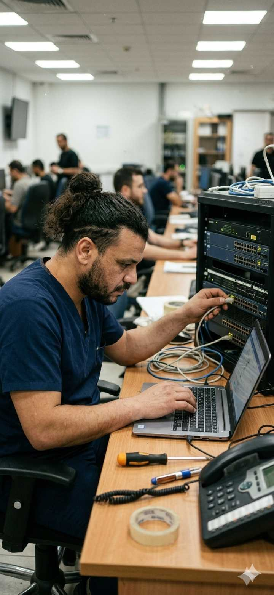
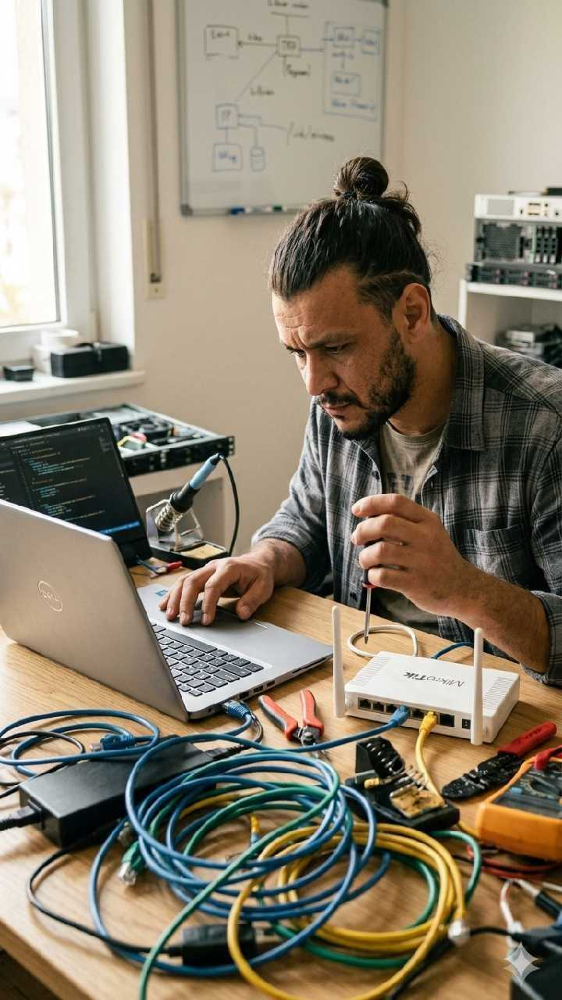
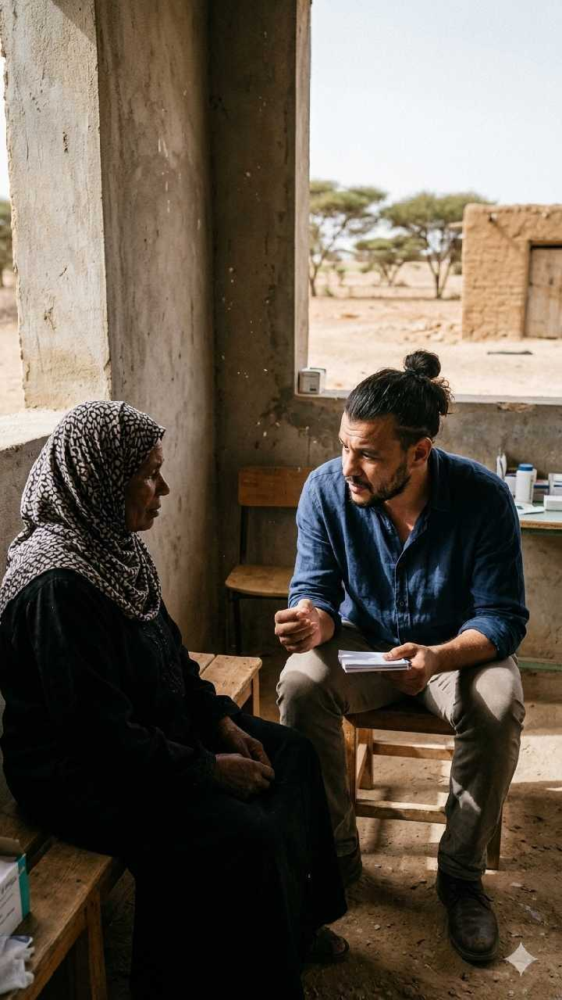
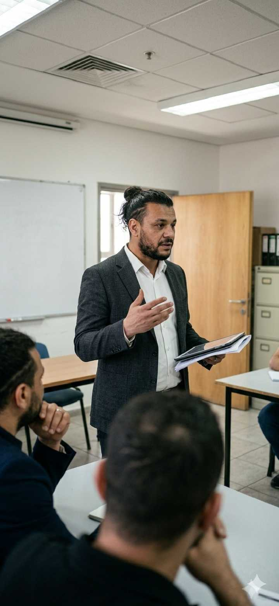

بناء حلول واقعية
حيث تكون البنية التحتية محدودة
منسق تكنولوجيا وتأثير ميداني يجمع بين الهندسة الصناعية وأنظمة المعلومات والعمليات الإنسانية واسعة النطاق. أنفذ حلولاً حيث تكون المخاطر عالية والموارد محدودة.

نبذة
مهندس وفني ومنسق للبيئات النائية
أعمل عند تقاطع التكنولوجيا والهندسة والأثر الإنساني. بخلفية في الهندسة الصناعية وخبرة عملية في أنظمة تقنية المعلومات، أقود عمليات حيث لا توجد بنية تحتية قياسية.
من إعادة تشغيل مصنع إسفلت Terex Magnum 140 في حاسي خبي ببشار، إلى تنسيق أكثر من 5 قوافل طبية وطنية عبر جنوب الجزائر، تركيزي على التكيف والتنفيذ الواقعي. أدير فرقاً متعددة التخصصات، أستعيد الأنظمة الحرجة، وأحل التحديات التشغيلية فوراً.
أسلوب العمل: عملي، موجه للحلول، قيادة تحت الضغط. أتحدث العربية والفرنسية والإنجليزية بطلاقة للتنسيق بين الثقافات.

الأثر
تنسيق الرعاية الصحية لأكثر من 10,000 مستفيد
المشكلة: مجتمعات نائية في جنوب وحدود الجزائر تفتقر لوصول منتظم للرعاية، ما يتطلب تدخلاً متنقلاً واسعاً.
الإجراء: كمنسق تقني وطني، قدت اللوجستيك والعمليات الميدانية والفرق الطبية عبر أكثر من 5 مهمات. نسقت مع السلطات المحلية والمؤسسات الصحية، وأدرت سلاسل الإمداد وحللت التحديات في ظروف صحراوية.
النتيجة: وصول مباشر للرعاية لأكثر من 10,000 شخص، مع نماذج تشغيلية قابلة للتكرار.

دراسة هندسية
استعادة بنية تحتية حرجة في ظروف ميدانية
الموقع: حاسي خبي، بشار — مصنع إسفلت Terex Magnum 140
المشكلة: توقف كامل يهدد مشروع بنية تحتية. دعم فني محدود في الموقع.
الإجراء: تشخيص شامل. إصلاح الناقل والمحرقة ووحدات الترشيح. استعادة ومعايرة نظام التحكم SYSTEX دون دعم المصنع.
النتيجة: عودة للطاقة التشغيلية الكاملة وإلغاء التوقف في بيئة نائية.
IT & Technical Support
تقنية عملية وموثوقة
دعم عملي للأفراد والشركات الصغيرة. بلا نظرية — أنظمة تعمل فقط.
تشخيص وإصلاح أكثر من 100 نظام في ظروف واقعية.
- استكشاف الأعطال وإصلاح المكونات
- تثبيت البرمجيات وتحسينها
- استرجاع البيانات واستعادة النظام
- بروتوكولات صيانة وقائية
تركيب وتكوين شبكات حيث الموثوقية أساسية.
- تصميم LAN/WAN للمكاتب الصغيرة
- إعداد الموجهات والمحولات ونقاط الوصول
- تعزيز الأمان والتحكم في الوصول
- توثيق وتدريب المستخدمين
- دعم مستمر وحل المشكلات
Initiative
برنامج التوعية الرقمية
قيد التطوير: برنامج قابل للتوسع لبناء مجتمعات مرنة رقمياً في المناطق المحرومة بالجزائر.
"للأطفال: تعليم الاستخدام الصحي للتكنولوجيا، إدارة وقت الشاشة، والتفكير النقدي عبر الإنترنت — ليس خوفاً بل كفاءة."
"لكبار السن: تدريب عملي على الوعي بالاحتيال، كشف الأخبار الكاذبة، والتواصل الرقمي الآمن."
Field Gallery
أعمال في الهندسة والتقنية والعمل الإنساني







Working Principles